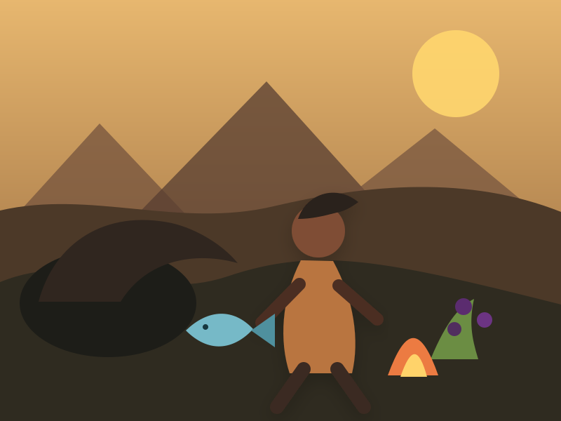
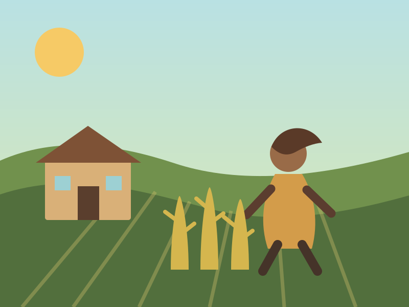
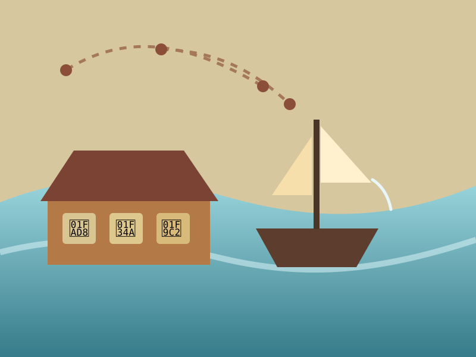
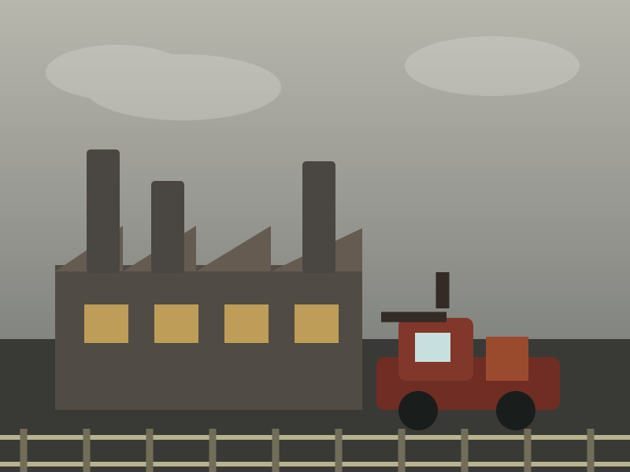
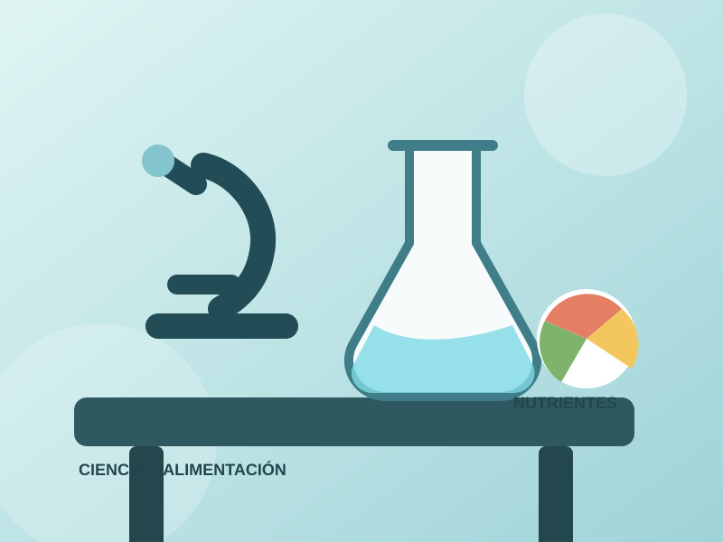
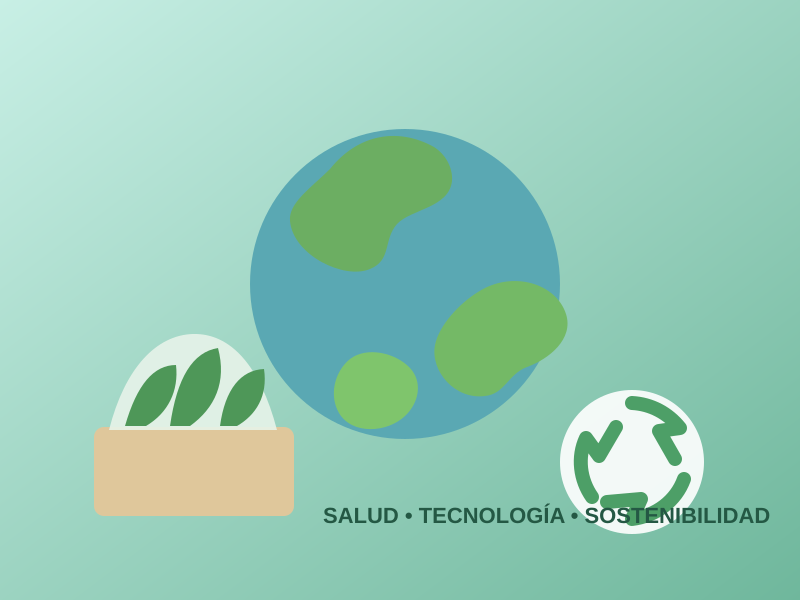

CAPÍTULO 01
Cuando comer era sobrevivir
Los primeros seres humanos se alimentaban con lo que encontraban en su entorno: frutos, raíces, semillas y otros recursos naturales. Con el tiempo aprendieron a cazar y pescar, ampliando sus fuentes de alimento.

CAPÍTULO 02
La revolución de una semilla
La agricultura permitió cultivar plantas y domesticar animales. Así, las comunidades pudieron contar con alimentos de manera más constante, establecerse en un lugar y formar poblaciones cada vez mayores.

CAPÍTULO 03
Los alimentos empiezan a viajar
Cuando las civilizaciones crecieron, también aumentó el intercambio entre regiones. Ingredientes, técnicas y costumbres culinarias comenzaron a viajar junto con comerciantes y exploradores.

CAPÍTULO 04
Máquinas, fábricas y producción masiva
La Revolución Industrial transformó la producción y distribución de alimentos. La mecanización agrícola, los nuevos transportes y las técnicas de conservación permitieron llevar comida a más personas y a mayores distancias.

CAPÍTULO 05
La ciencia descubre qué hay dentro
El estudio de la nutrición permitió comprender mejor los nutrientes y la importancia de una alimentación equilibrada. Al mismo tiempo, la tecnología alimentaria abrió nuevas posibilidades para conservar, procesar y producir alimentos.

Toca un alimento para aprender algo.
CAPÍTULO 06
Comer pensando también en el mañana
Hoy existe mayor interés por una alimentación saludable y sostenible. Se promueve el consumo de productos frescos y naturales, una dieta equilibrada y decisiones que reduzcan el impacto ambiental.

El viaje continúa
¿Cómo crees que
comeremos dentro de 100 años?
Durante miles de años, nuestra forma de alimentarnos ha cambiado junto con la sociedad, la ciencia y la tecnología. El próximo capítulo todavía está por escribirse.